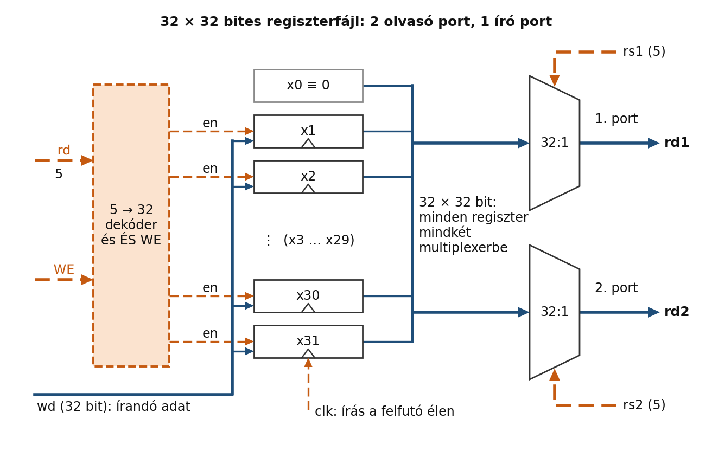

A sum kernel a tömb elemeit egyetlen regiszterbe gyűjti:
minden iterációban beolvassa a régi részösszeget, hozzáad egy elemet, és
visszaírja. Az eddig megismert kombinációs hálózatok erre képtelenek,
mert nincs emlékezetük: ha a bemenet megváltozik, a korábbi eredmény
elvész. Olyan elem kell, amely egy bitet tárol, és csak egy
meghatározott pillanatban vált.
A tárolás ára nagyon eltérő lehet. Egy 32 KiB-os első szintű adat-cache bitet tart; a legkisebb szokásos statikus tárolócellával, a hattranzisztoros SRAM-cellával ez már magában kb. 1,57 millió tranzisztor. Ugyanezt a processzor regisztereiben használt flip-flopokból felépíteni sokszor ennyi volna. Ezért kétféle tárolót ismerünk meg, mindegyiknek megvan a maga helye.
Vegyünk két invertert, és kössük az egyik kimenetét a másik bemenetére, körben. Ha az első pont 1, a második 0, ami visszaigazolja az elsőt. Ugyanígy önfenntartó a fordított állapot is. A kör bistabil: két nyugalmi állapota van, és bármelyikben marad, amíg a tápfeszültség megvan. Ez a visszacsatolás a tárolás elve.
Csak egy hiányzik: a beírás módja. Erre két fő megoldás van:
Figyeld meg a 2. élnél kezdődő magas fázist: a a fázis közepén 0-ra vált. A latch átlátszó, ezért követi, és a fázis végén a 0-nál ragad le; a alacsony fázisbeli ugrásait már nem látja. A flip-flop ezzel szemben az él előtti 1-et tartja a következő élig.
A legegyszerűbb bistabil kör két keresztbe kötött NOR kapu, két bemenettel: (set, beállít) és (reset, töröl). és , ahol a második kapu kimenete.
| Viselkedés | ||
|---|---|---|
| 0 | 0 | tart: változatlan |
| 1 | 0 | beállít: |
| 0 | 1 | töröl: |
| 1 | 1 | tiltott: mindkét kimenet 0 |
A tiltott kombináció azért baj, mert ha utána mindkét bemenet egyszerre tér vissza 0-ra, a két kapu versenyez: az egyenlő késleltetésű modellben a kimenetek oszcillálnak, a valóságban az áramkör bizonytalan, metastabil állapotba kerülhet, amelyből véletlenszerű idő alatt dől el valamelyik irány (Órajel, kritikus út és időzítési korlátok).
A tiltott bemenet kizárható, ha egyetlen adatbemenetet vezetünk be: , , ahol az engedélyező jel.
Definíció. A D-latch átlátszó, ha (), és tart, ha .
Az átlátszóság gondot okoz, ha a latch kimenete egy logikán át visszahat a bemenetére. Képzelj el egy számlálót: egy +1 áramkörön át -be megy. Amíg , az új érték azonnal újra végigfut, és a számláló egy órajel alatt bizonytalanul sokszor léphet.
Kössünk sorba két latchet ellentétes engedélyezéssel. A mester akkor átlátszó, amikor CLK = 0, a szolga amikor CLK = 1. A két rész sosem átlátszó egyszerre, tehát a bemenet sosem látszik át közvetlenül a kimenetre. A felfutó élen a mester bezár, megőrizve a pillanatnyi -t, a szolga pedig kinyílik, és kiadja.
Definíció. A D flip-flop a felfutó órajelélen veszi át a bemenet (az él előtt stabil) értékét, és azt a következő felfutó élig tartja.
A processzor regiszterei ezért élvezéreltek: egy órajelciklusban pontosan egy frissítés történik, a regiszter kimenetén a ciklus alatt stabil érték áll, a kombinációs logika pedig a ciklus végéig nyugodtan számolhat. Ugyanezt a szabályt követi a futószalag minden szakaszregisztere. Az élhez kötött követelményeket (setup, hold) a Órajel, kritikus út és időzítési korlátok tárgyalja.
Egy bites regiszter flip-flop közös órajellel. Ha nem minden ciklusban akarunk beleírni, az órajelet nem kapuzzuk (az idő előtti élek veszélyesek), hanem a bemenetre multiplexert teszünk: . Ha , a regiszter a saját értékét írja vissza önmagába.
A regiszterfájl (register file) regiszterek tömbje,
amelyet portokon keresztül érünk el. A RISC-V egész
alapkészletének utasításai legfeljebb két forrásregisztert
(rs1, rs2) olvasnak és egy célregisztert
(rd) írnak, ezért a tanítógép regiszterfájlja 32 darab 32
bites regiszter két olvasó és egy író porttal.

Az ábrán kövesd a három utat:
rd címet a dekóder (Multiplexer, dekóder és összeadók) 32 vezetékre
bontja, ezeket az írásengedélyező (WE) jellel ÉS-eljük. Csak a kijelölt
regiszter veszi át a közös wd adatot a felfutó élen.rs1, illetve
rs2 cím vezérli. Az olvasás tisztán kombinációs: órajel
nélkül, a cím megváltozása után azonnal (a multiplexer késleltetése
után) megjelenik az érték.Egy fontos következmény: ha egy utasítás ugyanabban a ciklusban ír egy regiszterbe, amelyből egy másik olvas, az olvasás még a régi értéket kapja, mert a beírás csak az élen történik. A futószalagnál ez adathazárdhoz vezet (Adathazárdok: forwarding és stall).
Minden port saját címdekódolást és saját vezetékeket kíván a cellában: egy szóvonalat és (egyszerűsített modellben) egy bitvonalat. A cella ezért mindkét irányban a portok számával nő, a terület pedig
ahol a regiszterek, a bitek, és az olvasó és író portok száma. Ez csak arányok összevetésére való durva modell, de a tendencia valós: a 2 olvasó + 1 író portos fájlhoz képest egy 8 olvasó + 4 író portos -szor akkora, és lassabb, nagyobb fogyasztású is. A sok utasítást egyszerre végrehajtó magok ezért nagy erőfeszítéssel takarékoskodnak a portokkal (Egy modern mag anatómiája).
Továbbvitt eredmény. A tanítógép regiszterfájlja 32 × 32 bit, két kombinációs olvasó és egy élvezérelt író porttal; az x0 mindig 0, és az ugyanabban a ciklusban történő olvasás a régi értéket adja. A terület nagyságrendileg a portszám négyzetével nő. Erre épít Az ISA mint szerződés: regiszterek és utasításformátumok, Az adatút elemei és összeállítása, a Regiszterátnevezés, ROB és spekuláció és Egy modern mag anatómiája.
Nagy tárolókhoz a flip-flop túl drága. A 6T SRAM-cella (static random-access memory) hat tranzisztorból áll:
Olvasáskor mindkét bitvonalat előre feltöltik, majd a szóvonalat bekapcsolják: a 0-t tároló oldal kissé lehúzza a maga bitvonalát, a jelérzékelő erősítő (sense amplifier) a kis különbségből dönt. Íráskor erős meghajtók a két bitvonalra ellentétes értékeket kényszerítenek, amelyek felülírják a gyengébb invertereket. A cella „statikus”: frissítés nem kell, de a tápfeszültség megszűnésekor elfelejti az adatot. A DRAM egyetlen tranzisztorral és kondenzátorral tárol, sűrűbb, de frissíteni kell (A DRAM működése).
A cellák tömbbe vannak rendezve: a sorokat szóvonal, az oszlopokat bitvonalpár köti össze. A cím felső része (sorcím) egy dekóderen át egyetlen szóvonalat kapcsol be, ezzel az egész sor felkerül a bitvonalakra; az alsó rész (oszlopcím) multiplexerrel kiválasztja a kért szót. Majdnem négyzetes tömbbel rövidek a vezetékek: a 262 144 bit például 512 sor × 512 oszlop. 32 bites szavakkal soronként szó fér el, tehát a sorcím 9, az oszlopcím 4 bit: összesen 13 bit címez szót. A nagy tömböket a vezetékek késleltetése miatt több résztömbre bontják.
Továbbvitt eredmény. A 6T SRAM-cella bitet statikusan, frissítés nélkül tárol; a memóriatömbben a sorcím szóvonalat választ, az oszlopcím a bitvonalakból multiplexál. Ezt a szervezést a Cache-szervezés: leképezés és címbontás és A DRAM működése viszi tovább.
1. Latch kontra flip-flop. Az ábra 5–12. mintája (a minták 1-től számozva); a latch és a flip-flop is 0-ról indult.
| minta | 5 | 6 | 7 | 8 | 9 | 10 | 11 | 12 |
|---|---|---|---|---|---|---|---|---|
| CLK | 0 | 0 | 1 | 1 | 0 | 0 | 1 | 1 |
| 1 | 1 | 1 | 0 | 1 | 0 | 0 | 0 | |
| latch | 1 | 1 | 1 | 0 | 0 | 0 | 0 | 0 |
| flip-flop | 1 | 1 | 1 | 1 | 1 | 1 | 0 | 0 |
A 7. mintánál van a felfutó él: a flip-flop az előtte (6. minta) látott -et veszi át. A latch a 8. mintában még átlátszó, ezért követi a 0-t, a 9–10. mintában (CLK = 0) pedig tartja. A 11. mintánál jön a következő él: a flip-flop a 10. minta értékét veszi át.
2. SRAM-cím. A 0x0ABC szócím
()
a fenti tömbben: oszlopcím
,
sorcím
.
Ellenőrzés:
.
3. Portköltség. 32 × 32 bit, 2R + 1W: egység; 4R + 2W: , négyszerese.
Az sr_latch_nor kapukésleltetésenként frissíti a két NOR
kimenetét, a visszaadott logikai érték pedig megmondja, beállt-e a
kör:
import sys; sys.path.insert(0, "code")
from archkit import logic as L
# (név, S, R, Q, Qn)
cases = [("beállít (S=1)", 1, 0, 0, 1), ("tart (S=R=0)", 0, 0, 1, 0),
("töröl (R=1)", 0, 1, 1, 0), ("tiltott (S=R=1)", 1, 1, 1, 0),
("elengedés", 0, 0, 0, 0)]
for name, s, r, q, qn in cases:
hist, stable = L.sr_latch_nor(s, r, q, qn, steps=5)
path = " ".join(f"{a}{b}" for a, b in hist)
print(f"{name:16s} (Q,Qn): {path} {'stabil' if stable else 'oszcillál'}")beállít (S=1) (Q,Qn): 01 00 10 stabil
tart (S=R=0) (Q,Qn): 10 stabil
töröl (R=1) (Q,Qn): 10 00 01 stabil
tiltott (S=R=1) (Q,Qn): 10 00 stabil
elengedés (Q,Qn): 00 11 00 11 00 11 oszcillálAz utolsó sor a tiltott bemenet utáni versenyhelyzet modellje. A latch és a flip-flop a lap alap jelsorozatára, majd a regiszterfájl:
clk = [int(c) for c in "001100110011001100110011"]
d = [int(c) for c in "011111101000000111101000"]
text = lambda xs: "".join(map(str, xs))
print("CLK ", text(clk))
print("D ", text(d))
print("latch ", text(L.d_latch(clk, d)))
print("flipfl.", text(L.d_flipflop(clk, d)))
rf = L.RegFile()
rf.write(5, 100); rf.clock()
rf.write(5, 101) # az x5 írása előkészítve
print("él előtt:", rf.read(5, 0))
rf.clock()
print("él után: ", rf.read(5, 0))
rf.write(0, 99); rf.clock()
print("x0: ", rf.read(0, 0))
print("SRAM-cím 0x0ABC -> (sor, oszlop):", L.split_address(0x0ABC, 9, 4))
for reads, writes in ((2, 1), (4, 2), (8, 4)):
print(f"{reads}R{writes}W relatív terület: {L.regfile_area(32, 32, reads, writes)}")CLK 001100110011001100110011
D 011111101000000111101000
latch 001111100000000111100000
flipfl. 001111111100000000111100
él előtt: (100, 0)
él után: (101, 0)
x0: (0, 0)
SRAM-cím 0x0ABC -> (sor, oszlop): (171, 12)
2R1W relatív terület: 9216
4R2W relatív terület: 36864
8R4W relatív terület: 147456A kimenet egyezik a kézi számításokkal: az él előtti olvasás még 100-at ad, és a 8R4W fájl tizenhatszor akkora, mint a 2R1W.
x0-ba írt érték visszaolvasható. Ok: x0
huzalozott nulla. Javítás: más regisztert
használj.archkit.logic.RegFile x1 regiszterével: írj Python-ciklust,
amely minden órajelben a regiszter +1-gyel növelt (3 után 0) értékét
írja vissza. Mutasd meg, hogy az olvasás az élig a régi értéket
adja.A tárolás elve a visszacsatolás: a két keresztbe kötött kapu bistabil. A D-latch szintvezérelt (átlátszó vagy tart), a D flip-flop, két ellentétesen vezérelt latch, csak a felfutó élen vált, ezért ciklusonként pontosan egy frissítést ad. A regiszterfájl írását dekóder, olvasását multiplexerek végzik; a tanítógépé 32 × 32 bit, 2R + 1W, az x0 mindig 0, a ciklusbeli olvasás a régi értéket látja, a terület a portszám négyzetével nő. A 6T SRAM-cella és a sor–oszlop szervezésű tömb a cache és (rokon elven) a DRAM alapja.
1. feladat. : a 3–4. mintában , a latch tartja az 1-et, az 5–6.-ban követi a 0-t, a 7.-ben tart.
2. feladat. 6 bites cím, a dekódernek 64 kimenete van.
3. feladat. bit; sor, 7 bit sorcím; soronként szó, 2 bit oszlopcím (összesen 9 bit, 512 szó).
4. feladat. Terület : .
5. feladat. Minden bithez egy flip-flop, bemenetén 2:1 multiplexer: a 0. bemenet a saját , az 1. a ; a választójel a közös , az órajel közös és nem kapuzott.
6. feladat.
rf = L.RegFile()
for cycle in range(6):
old, _ = rf.read(1, 0)
rf.write(1, (old + 1) % 4) # kombinációs +1 a kimenetből a bemenetre
during, _ = rf.read(1, 0)
rf.clock()
print(f"{cycle}. ciklus: él előtt x1={during}, él után x1={rf.read(1, 0)[0]}")0. ciklus: él előtt x1=0, él után x1=1
1. ciklus: él előtt x1=1, él után x1=2
2. ciklus: él előtt x1=2, él után x1=3
3. ciklus: él előtt x1=3, él után x1=0
4. ciklus: él előtt x1=0, él után x1=1
5. ciklus: él előtt x1=1, él után x1=2Ciklusonként pontosan egy lépés történik, mert a visszacsatolt érték csak az élen íródik be.
7. feladat. A gomb jele az órajeltől független, ezért az élhez bármilyen közel változhat; ekkor a flip-flop metastabil állapotba kerülhet, és a követő logika egy része 0-nak, más része 1-nek láthatja. A két sorba kötött flip-flop (szinkronizáló) az elsőnek egy teljes ciklust ad a beállásra; a második már nagy valószínűséggel határozott értéket kap. A kockázat nem tűnik el, csak nagyon kicsi lesz.